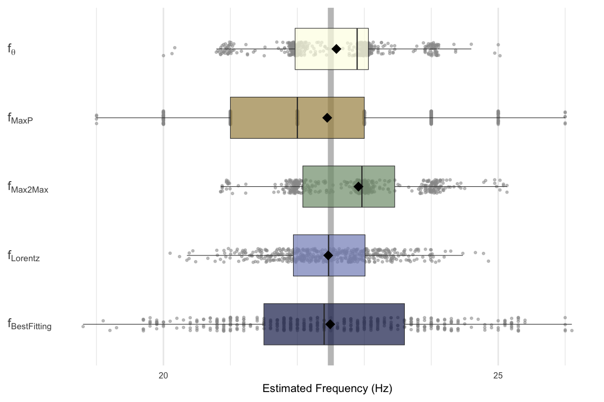

if(!require(tidyverse)) install.packages("tidyverse")
if(!require(FibFreq)){
library(devtools)
install_github("origami-dss/FibFreq")}
library(tidyverse)
library(FibFreq)In data science we are often confronted with different estimators for the same quantity. For instance, there are various methodes for calculating the fundamental freqeuncy of an oscillatory time series or for the strength of long-range persistence of a noisy time series. It is common practise to benchmark the different estimators for a specific suite of test data. How to compare the results? In this post, I will present three vizualizations of the statistical summary.
As test data I will use realizations of a model for stochastic oscillations. Each time series contains 1000 data points, the model frequency is 20 Hz. sampled at 1 kHz (1,000 data points).
First I define a function that computes realizations of stochastic oscillators:
Gaussian_distributed_ts_with_Gaussian_PSD <- function(T = 1, f_mean = 22.5, f_sigma = 2, delta_t = 0.001, seed = NULL)
{
fs <- 1./delta_t
N <- T/delta_t
N_2 <- floor(N/2)
set.seed(seed)
x <- rnorm(N)
X <- fft(x, inverse = FALSE)
freq <- (0:N_2)/N/ delta_t
coeffs_FourAmps <- sqrt(dnorm(freq, f_mean, f_sigma))
if (N %% 2 == 0) multiplyers = c( coeffs_FourAmps , (rev( coeffs_FourAmps ))[-c(1, length( coeffs_FourAmps ))]) else multiplyers = c(coeffs_FourAmps, rev(coeffs_FourAmps))
X_f <- multiplyers * X
x_ts <- Re(fft(X_f, inverse = TRUE)/length(X_f))
}In a second step I apply this function for creating 500 time series. For all of them the fundamental frequency is computed with five different estimators (based on functions of the FibFreq package).
N <- 500
model_data <- map_dfc(
.x = 1:N,
.f = function(x) {
out <- Gaussian_distributed_ts_with_Gaussian_PSD(seed = x)
setNames(as.data.frame(out), paste0("ts_", x))
}
)
fn <- function(x, delta_t = 0.001, f_min = 1, f_max = 45) {
res_sin_fit <- freq_fitted_sinusoidals(x, delta_t = delta_t, test_freqs = seq(f_min, f_max, by = 0.1))
res_max2max <- freq_max2max(x, delta_t = delta_t)
res_thresh <- freq_threshold_crossing(x, delta_t)
res_MaxP <- freq_argmax_periodogram(x, delta_t, f_min = f_min, f_max = f_max)
names(res_MaxP)[1] <- "freq_MaxP"
res_Lorentz <- freq_Lorentz_fit(x, delta_t = delta_t, f_min = f_min, f_max = f_max)
return (c(res_sin_fit[1], res_max2max[1], res_thresh[1], res_MaxP[1], res_Lorentz[1]))
}
result_frequency_estimates <- as_tibble(model_data) %>% map_df(~ fn(.x))
freq_res_for_boxplot <- as_tibble(cbind(no = 1:N, result_frequency_estimates)) %>% pivot_longer(cols = !no,names_to = "names", values_to = "freq_estimate")library("scico")
COLS = scico(5, palette = 'oleron')
freq_res_for_boxplot %>%
ggplot(aes(x = freq_estimate, y = names, fill = names)) +
geom_vline(aes(xintercept = 22.5), col = "grey50", linewidth = 2, alpha = 0.5) +
geom_jitter(width = 0.001, height = 0.1, size = 0.5, col = "grey60", alpha = 0.5) +
geom_boxplot(alpha = 0.7, width = 0.6, outliers = FALSE, size = 0.2, fill = COLS) +
stat_summary(fun = mean, geom='point', shape = 18, size = 3) +
labs(x = "Estimated Frequency (Hz)") +
scale_x_continuous(breaks = seq(15, 25, by = 5), minor_breaks = seq(16, 32, by = 1)) +
scale_y_discrete(
labels = c("freq_threshold_crossing" = expression(f[theta]),
"freq_MaxP" = expression(f[MaxP]),
"freq_max2max" = expression(f[Max2Max]),
"freq_Lorentz" = expression(f[Lorentz]),
"freq_fitted" = expression(f[BestFitting]) )) +
theme_minimal() +
theme(
axis.title.y = element_blank(),
axis.text.y = element_text(hjust = 0),
axis.text.x = element_text(size = 6),
axis.title.x = element_text(size = 8),
legend.position = "none",
panel.grid.minor.y = element_blank(), #
panel.grid.major.y = element_blank()
)